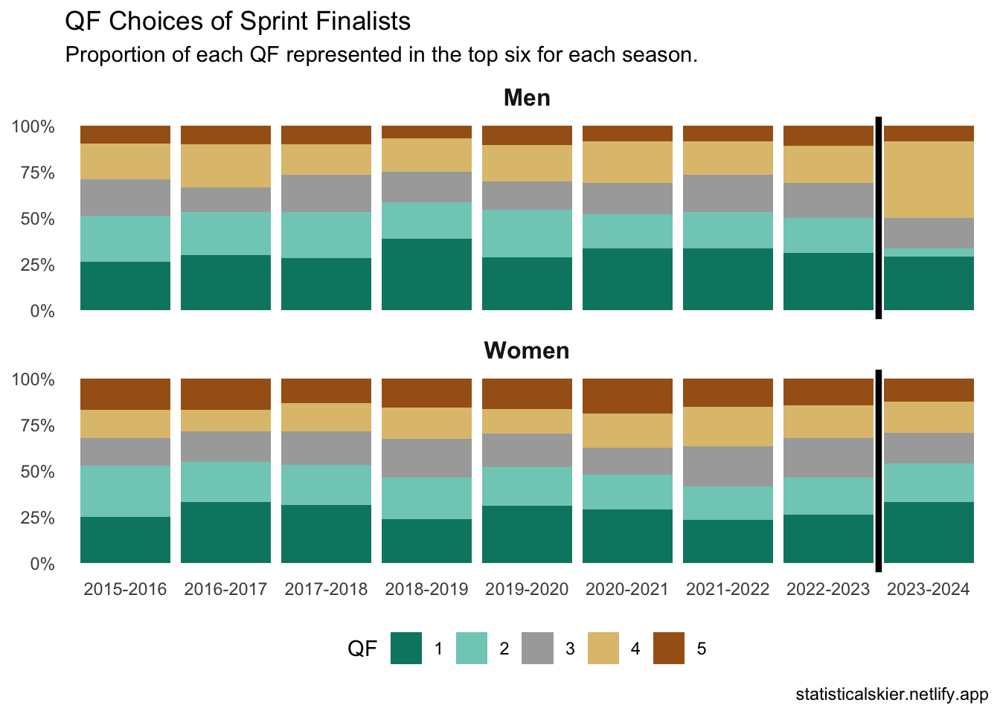
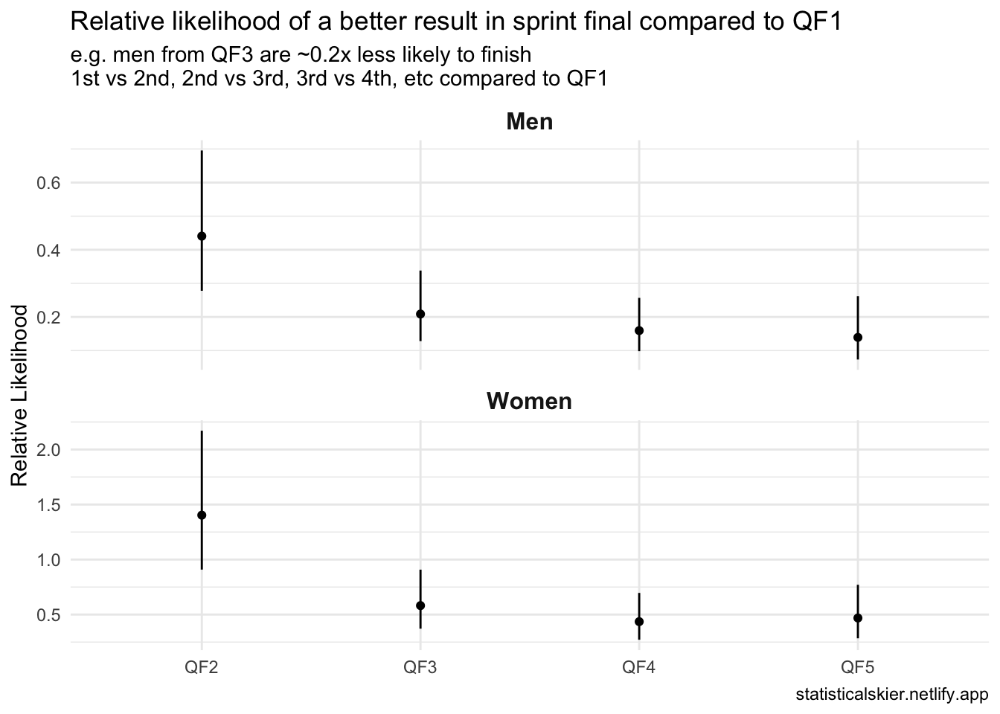

Sprint QF Heat Choices
I was having a conversation earlier with some friends about the strategy behind the choice of QF heat in World Cup sprint races, and realized I hadn’t looked at the actual empirical data on that in quite a while.
The background here is that athletes can choose their QF heat, and there’s some debate about how to strategize that, balancing:
- what other competitors have already selected a particular heat
- the fact that QFs 1 & 2 are funneled into SF1, giving them an extra few minutes of rest before the final (assuming you make it through)
So what have the athletes been doing? The following plot shows the proportion of each QF comprising the atheletes in the final in each season.

As you can see, there’s been a modest but consistent preference for QFs 1 & 2 for both men & women, and while it has bounced around it has remained fairly consistent over time. (Note that I’ve separated the current season slightly, since we only have a handful of sprint races so far, so we can’t necessarily read much into any changes yet.)
The problem here is that causality is almost impossible to establish. Are skiers more likely to reach the finals because they are choosing QFs 1/2, or are the sprinters choosing QFs 1/2 already the best sprinters, so they’d be more likely to reach the finals anyway?
A very crude way to try to disentangle that might be to fit a proportional odds logistic regression (POLR) with a variable that acts as some sort of proxy for skier strength.
Specifically, we can model a response variable of finishing place in the final (1st - 6th) as a function of their sprint FIS points at the time of the race (to control for skier strength) and the QF they originated from.
If you’ve never heard of POLR the basic idea is that it’s fitting 5 separate binary logistic regressions for each response variable category transition: 6th to 5th, 5th to 4th, 4th to 3rd, etc. and estimating the impact of each variable on finishing in one of the higher categories.
You can see the results in the following plot, which due to the way the model works presents everything relative to QF1.

It’s tempting to think we’ve solved the causality direction problem here since these results “controlled for” skier strength, but I don’t really buy it. This is still operating on fundamentally observational data; ideally we’d run a bunch of sprint races with athletes randomly assigned to QFs, but for some reason FIS hasn’t taken me up on that idea.
Also, I think that FIS sprint points are a fairly noisy measure of “skier strength” since it’s really just measuring qualification speed. That’s almost certainly sort of correlated with overall results in the heats, but I think most World Cup athletes would tell you that succeeding the in heats is a pretty different sort of skill than succeeding in qualification.